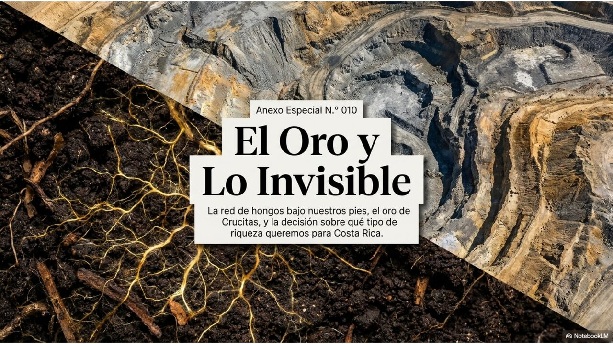
EL SUBSUELO VIVO
FRENTE AL ORO
La red micorrízica global, el caso Crucitas y la disputa por el modelo de desarrollo de Costa Rica
Este anexo amplía la nota científica del boletín y la convierte en un instrumento de lectura para la decisión pública. Lo hace porque, esta misma semana, dos hechos sin relación aparente se cruzaron sobre el mismo suelo costarricense: la publicación en Science del primer mapa global de las redes de hongos que mueven carbono bajo tierra, y la gira de la presidenta Laura Fernández a Crucitas para impulsar la reactivación de la minería de oro.
El cruce no es casual. Plantea, con una nitidez poco común, la pregunta que organiza todo este documento —y que un lector nos formuló directamente:
¿Cuánto valor, desarrollo y seguridad provee esta red fúngica frente a la lógica extractivista del oro?
No la respondemos con una cifra única —sería deshonesto—, pero sí desarmamos la pregunta en sus partes para que cada cual la pondere con criterio. Antes, lo esencial: qué se descubrió y por qué cambia el tablero.
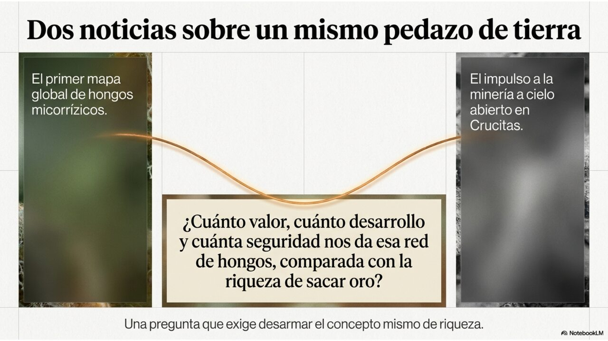
Una infraestructura viva, invisible y colosal, salió por fin a la luz
Bajo casi cualquier campo, bosque o cafetal hay una red de filamentos finísimos —llamados hifas— tejida por hongos micorrízicos arbusculares (HMA). Estos hongos se asocian con las raíces de cerca del 70 % de las plantas del mundo en un trueque antiquísimo: la planta les entrega azúcares (carbono que capturó del aire); el hongo le devuelve agua y nutrientes —sobre todo fósforo— que extrae de rincones del suelo a los que la raíz sola no llega.
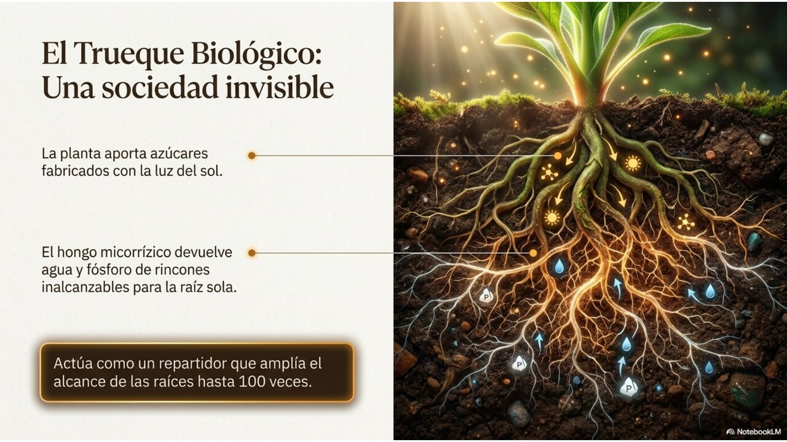
Hasta ahora nadie había medido la magnitud global de esa red. Un equipo internacional, liderado por la organización SPUN, lo hizo a partir de más de 16.000 muestras de suelo y modelos de inteligencia artificial. Las cifras son difíciles de imaginar:
- ~110 billones de kilómetros de hifas —casi mil veces la distancia de la Tierra al Sol—, concentradas sobre todo en los primeros 15 centímetros del suelo.
- ~300 megatoneladas de carbono en biomasa fúngica viva: entre 4 y 6 veces la masa de toda la humanidad.
- ~4.000 millones de toneladas de CO₂ equivalentes que estas redes ayudan a llevar al suelo cada año, cerca del 11 % de las emisiones humanas.
- En suelos sanos, multiplican hasta cien veces el alcance de las raíces y aportan más del 80 % del fósforo de muchas plantas.
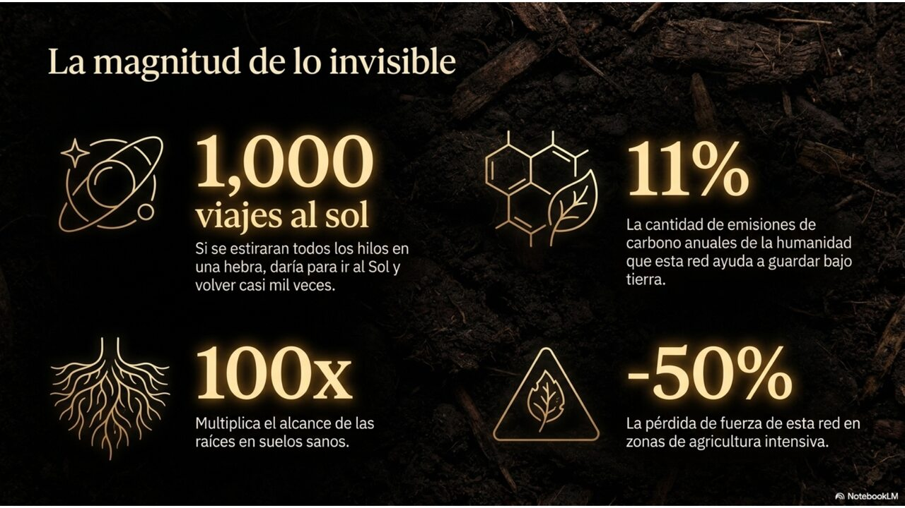
Dos datos cambian el marco de la política pública. Primero: los pastizales silvestres concentran cerca del 40 % de esta infraestructura, mientras que los suelos agrícolas intensivos muestran densidades hasta un 50 % menores —la forma en que usamos la tierra degrada la red. Segundo: el estudio se publicó junto a un mapa interactivo pensado expresamente para que gobiernos y tomadores de decisión incorporen estas redes en sus agendas climáticas y modelos de carbono. Es decir: nace ya con vocación de instrumento, no solo de hallazgo.
El suelo deja de ser un soporte inerte y pasa a ser capital
Durante siglos, la economía trató el suelo como un simple escenario: el lugar donde ocurre la producción. Este mapa obliga a un cambio de categoría. El suelo es un sistema vivo que presta servicios medibles —fertilidad, retención de agua, captura de carbono, resistencia de los cultivos a la sequía y a los metales pesados, control de la erosión— y esos servicios tienen un sustrato biológico concreto que ahora podemos ubicar en un mapa.
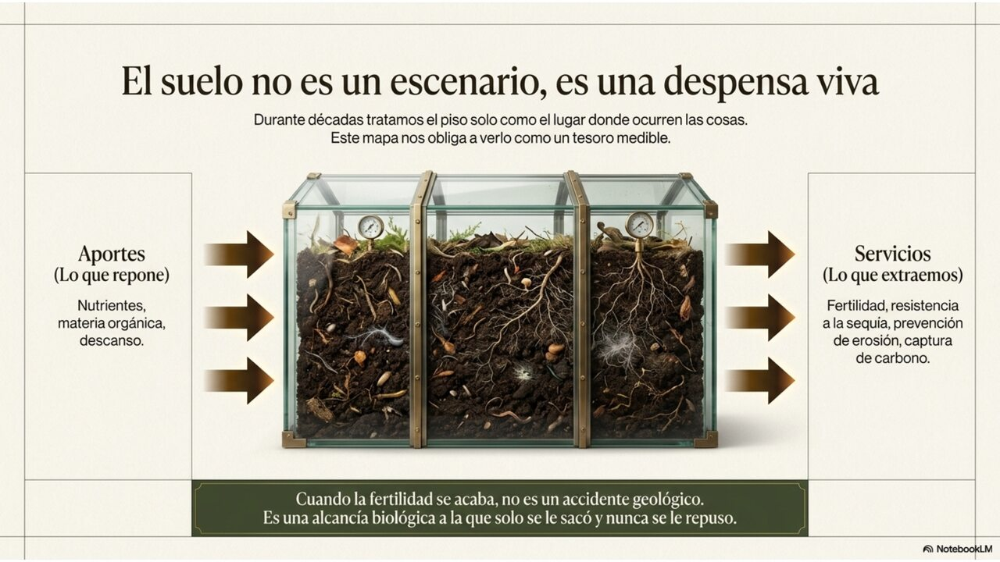
La red micorrízica es un sistema disipativo en sentido literal (Prigogine + Landauer): mantiene su orden —el trueque carbono/nutrientes— procesando flujos de energía y materia, con un costo termodinámico real. No es decoración conceptual: si se interrumpe el flujo, el orden colapsa. La metáfora de «red de información» o «internet del bosque», en cambio, debe declararse como analogía débil: el hongo coordina intercambios sin un centro de procesamiento, y trasladar eso al lenguaje de redes humanas exige cautela para no caer en el pan-informacionalismo que la propia ADD advierte.
Lo decisivo para la política: la identidad productiva de un territorio —un cafetal, un bosque— es un proceso que se reproduce consumiendo recursos. Cuando esos flujos se cortan (por remoción del suelo, contaminación o monocultivo intensivo), la clausura organizacional del sistema se degrada. No «se pierde la fertilidad» como un accidente: el sistema deja de poder sostener el proceso disipativo que la generaba.
Para un país que vende naturaleza, el subsuelo es un activo estratégico
Costa Rica construyó su marca-país sobre la conservación, el ecoturismo y una agricultura de alto valor. El mapa micorrízico convierte un activo hasta ahora invisible —la vida del suelo— en algo cuantificable, y por tanto gestionable y defendible. Pero limitar la relevancia a los productos de exportación sería una omisión analítica: el subsuelo vivo es, antes que un activo de marca, la base de la reproducción material del país.
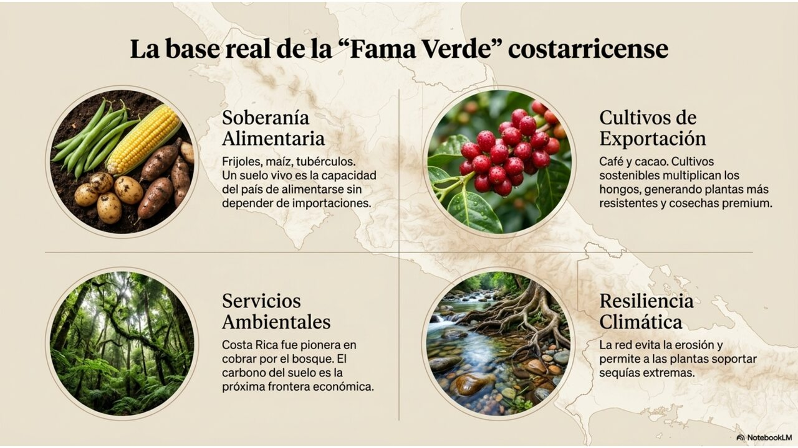
Dónde se acopla, en concreto
- Soberanía y seguridad alimentaria. Las redes micorrízicas sostienen también los cultivos de consumo interno —frijol, maíz, raíces y tubérculos, plátano, hortalizas— que abastecen el mercado local y la feria del agricultor. Un suelo biológicamente sano es condición de la capacidad del país de alimentarse a sí mismo y, por tanto, de su resiliencia ante choques externos de precios o de cadenas de suministro. Esta dimensión —no exportadora— es la más directamente ligada a la soberanía.
- Café y cacao. Investigaciones en Coffea arabica muestran que el manejo agroecológico aumenta la diversidad de hongos micorrízicos frente al convencional. Para los cultivos de exportación, la salud micorrízica es directamente productividad, resiliencia climática y diferenciación de origen.
- Bosques y PSA. El Pago por Servicios Ambientales hizo de Costa Rica un referente mundial al poner precio a servicios antes invisibles (agua, captura de carbono, biodiversidad). El carbono del suelo y las redes que lo sostienen son la próxima frontera lógica de ese instrumento.
- Resiliencia hídrica y de suelos. Las redes reducen la erosión, mejoran la estructura del suelo y ayudan a las plantas a tolerar sequías —relevante para un país expuesto a la variabilidad climática y al fenómeno de El Niño.
- Capacidad científica instalada. La UCR, el CATIE y la tradición de investigación tropical dan al país una base para no ser mero receptor del dato, sino productor de conocimiento aplicado sobre sus propios suelos.
El capital simbólico de «excepcionalidad verde» que el país proyecta es, en términos de sistemas-mundo, un activo de su inserción semiperiférica: le permite captar turismo, sellos de origen, cooperación y mercados de carbono. Pero por debajo de ese activo de marca hay uno más fundamental y menos visible: la base biofísica de la soberanía alimentaria. Las redes micorrízicas sostienen ambos. Degradarlas erosiona a la vez la narrativa que da valor a la marca-país y la capacidad material del país de producir su propio sustento —dos pérdidas de naturaleza distinta que conviene no confundir ni sumar sin más.
Dos lógicas del valor colisionan sobre el mismo suelo
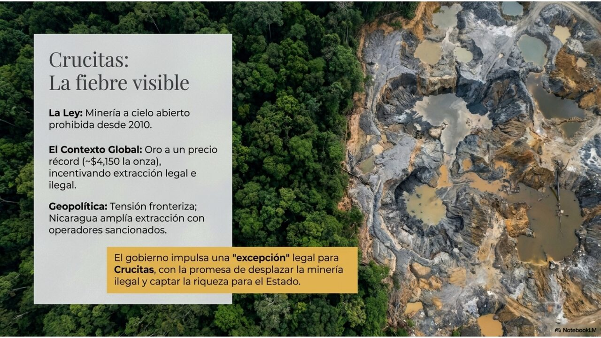
Hechos verificados
La minería metálica a cielo abierto está prohibida en Costa Rica desde 2010 (Ley 8904). En noviembre de 2024, el gobierno de Rodrigo Chaves presentó un proyecto de ley (expediente 24.717) que crearía un régimen de excepción únicamente para Crucitas de Cutris de San Carlos, en el norte fronterizo: permitiría la minería metálica en esa zona, prohibiendo expresamente el mercurio y la lixiviación abierta, ordenando al MINAE un diagnóstico de contaminación de aguas, degradación de suelos y riesgos a la salud, y declarando la actividad de «conveniencia nacional». El expediente fue dictaminado en septiembre de 2025.
La presidenta Laura Fernández convocó el proyecto a sesiones extraordinarias; lleva cerca de dos años bloqueado por más de 600 mociones de la oposición. El 19 de junio de 2026, durante una gira de campo a la zona para presionar a la Asamblea, se escuchó una explosión y la mandataria fue evacuada por protocolo (la describió como una «bombeta» amplificada por el eco del bosque). La zona está tomada por minería ilegal —coligalleros, muchos de ellos nicaragüenses— que emplea mercurio y cianuro. El argumento oficial: legalizar para desplazar la ilegalidad, capturar renta para el Estado (educación, salud, infraestructura) y restar oxígeno al crimen organizado.
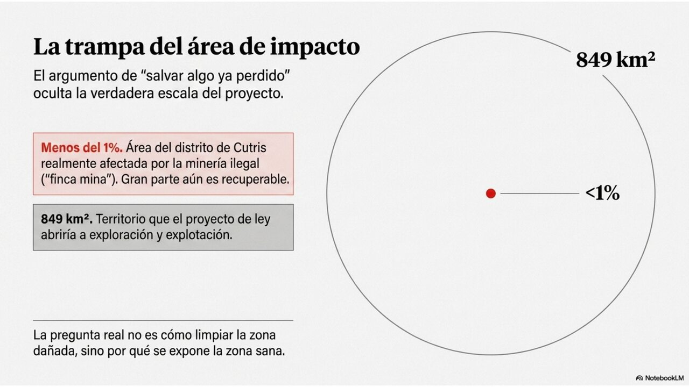
Una precisión que reencuadra el debate: el daño no es general sino concentrado. El foco —la «finca mina Crucitas» y su entorno— creció de unas 800 a unas 3.000 hectáreas en pocos años, pero los estudios oficiales sitúan el área efectivamente afectada por minería ilegal en menos del 1 % del distrito de Cutris. El proyecto, en cambio, abriría a exploración y explotación más de 849 km². La mayor parte del territorio permanece sano, y la regeneración secundaria del bosque tropical es posible —aunque lenta, variable e incierta en su resultado—. Esto desplaza la pregunta: no es solo «¿cómo remediar lo dañado?», sino «¿cómo proteger lo aún sano y rescatar lo recuperable?».
Análisis epistémico · MEEE-G
| Afirmación | Código | Justificación procesual |
|---|---|---|
| La minería a cielo abierto está prohibida desde 2010 y existe un proyecto de excepción para Crucitas. | [DC] | Marco legal vigente (Ley 8904) y expediente legislativo público (24.717). |
| La zona está bajo control de minería ilegal con uso de mercurio. | [DC] | Reportes oficiales, periodísticos y de organizaciones concordantes durante años. |
| El daño está concentrado en menos del 1 % del distrito; la mayor parte sigue sana. | [DC] | Estudios oficiales citados por la UCR y Kioscos Socioambientales; cifras de 800→3.000 ha del foco afectado. |
| El proyecto abre 849 km², muy por encima del área dañada que dice remediar. | [DC] | Texto del expediente 24.717 contrastado con el área afectada reportada (<1 %). |
| La minería a cielo abierto removería el suelo donde vive la red micorrízica. | [DC] | Definición técnica del método (remoción masiva de suelos y rocas); la red se concentra en los primeros 15 cm. |
| Parte de lo dañado es recuperable mediante regeneración o restauración. | [IP] | Inferencia plausible: la sucesión secundaria opera, pero es lenta, variable y sin garantía de equivalencia con lo destruido. |
| Legalizar desplazaría efectivamente a la minería ilegal. | [H] | Hipótesis central del proyecto, no demostrada; criterios de la UCR y la experiencia regional sugieren que la formalización puede institucionalizar la ilegalidad en vez de erradicarla. |
| La renta del oro se traduciría en ingresos significativos y bien distribuidos para el Estado. | [IP] | Inferencia condicionada al diseño fiscal, la gobernanza y la captura de renta; el precio récord la favorece, la informalidad la erosiona. |
| El valor de los servicios del suelo supera al del oro extraíble. | [C] | Conjetura razonada: depende de horizonte temporal, tasa de descuento y de qué se considere conmensurable (ver Sección V). |
El oro es la cuasi-mercancía monopólica por excelencia: líquida, almacenable, demandada por bancos centrales y hoy en máximos históricos (~USD 4.150 por onza, tras superar repetidamente esa marca en 2026). Ese precio récord es el motor que reactiva tanto la presión por minería legal como el auge de la ilegal. Crucitas es un nodo periférico-fronterizo acoplado a una cadena global de valorización del oro: el metal ilegal se «lava» y se exporta, integrándose a circuitos financieros del núcleo.
La dimensión regional es ineludible y conecta con la Nota 06 del boletín: el régimen de Ortega-Murillo expandió concesiones auríferas —incluso en la franja del Río San Juan— y Estados Unidos sancionó en abril a empresas y a hijos de la pareja por el negocio del oro con China. El oro de la frontera norte es, a la vez, recurso económico y vector geopolítico. Costa Rica decide su política minera dentro de ese campo de fuerzas, no en abstracto.
La disputa de narrativas
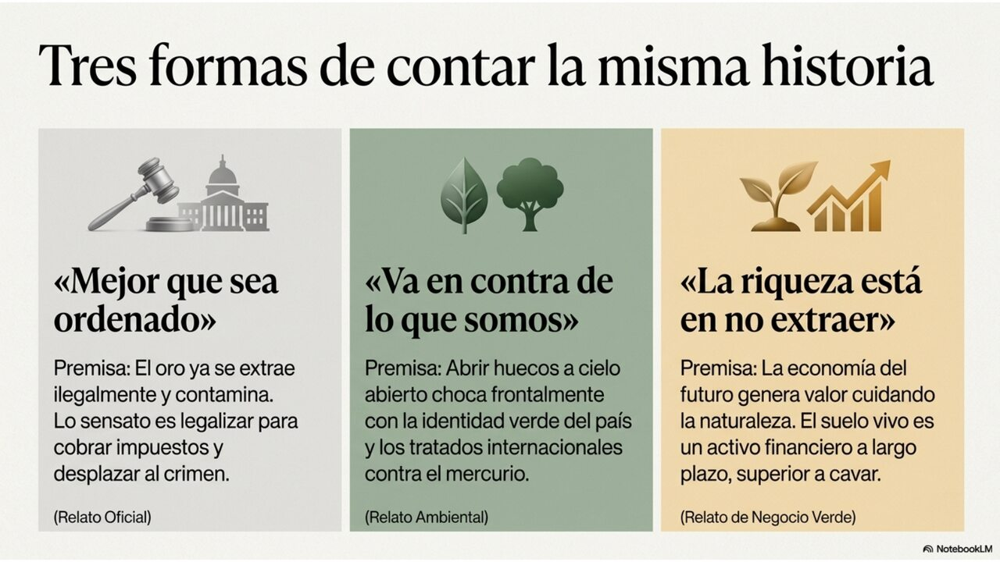
El conflicto no es solo de datos; es de marcos. Tres narrativas compiten por definir qué es Crucitas:
- Narrativa de soberanía y orden. «El oro se está extrayendo de todas formas, por redes criminales que dañan el ambiente; legalizar permite que la riqueza le quede al país y combate la ilegalidad.» Es la narrativa oficial: convierte la minería en un instrumento de control territorial y recaudación.
- Narrativa de conservación e identidad. «La minería a cielo abierto es incompatible con el modelo de país y con el Convenio de Minamata sobre el mercurio.» Reduce la disyuntiva a minería legal vs. ilegal solo en apariencia; su núcleo es la defensa de la marca-país y del bien común.
- Narrativa de la naturaleza como riqueza. Voces como la Fundación For the Oceans plantean que en Crucitas no se discute minería, sino el futuro económico del país: que la riqueza puede generarse precisamente no extrayendo, convirtiendo el oro en naturaleza y la naturaleza en valor. El mapa micorrízico es munición empírica para esta tercera narrativa.
La función de este anexo no es coronar una narrativa, sino mostrar qué pone en juego cada una y con qué estatus epistémico. El mapa micorrízico no «gana» el debate: lo reencuadra, al hacer visible un valor que antes no entraba en la contabilidad.
La dimensión omitida: el precedente y la ventana de Overton
Un análisis riguroso no puede tratar la excepción como un hecho aislado. Toda excepción a una prohibición opera además como precedente: desplaza el umbral de lo políticamente decible. Lo que hoy es «impensable» (minería metálica a cielo abierto en un país que la prohibió en 2010) puede volverse, vía una excepción «por esta única vez», sucesivamente discutible, aceptable y finalmente exigible. Es el mecanismo de la ventana de Overton: el rango de lo socialmente admisible se corre, y puede correrse deliberadamente mediante la repetición de una narrativa de emergencia.
La hipótesis del precedente no es especulación libre: se apoya en señales concretas y verificables.
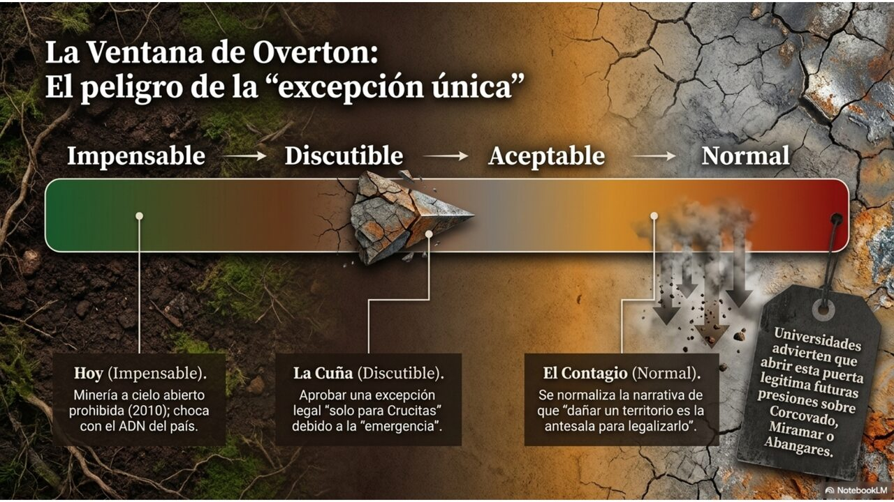
| Señal | Código | Justificación procesual |
|---|---|---|
| La cláusula de «seguridad jurídica» mantendría vigentes las concesiones aunque la ley se derogara. | [DC] | Disposición incluida en el texto del expediente 24.717: diseña irreversibilidad institucional. |
| Existe acaparamiento especulativo de solicitudes de exploración por miles de hectáreas a la espera de la ley. | [IP] | Inferencia respaldada por reportes (Diario Extra, Semanario Universidad) sobre concentración de solicitudes; el móvil especulativo es plausible, no probado. |
| La desproporción 849 km² frente a <1 % dañado sugiere que el objetivo es habilitar minería a escala, no remediar. | [Int] | Interpretación del criterio institucional de la UCR/Kioscos; lectura de la intención a partir de la asimetría territorial. |
| La aprobación replicaría el modelo en otras zonas con minería ilegal (Corcovado, Miramar, Abangares). | [H] | Hipótesis de difusión del precedente formulada por analistas; trayectoria plausible, no determinada. |
El precedente no es solo jurídico: es la consolidación de una jerarquía de valores. Lo que una excepción de este tipo normaliza es la primacía de lo monetario-inmediato (un stock líquido, valorizable hoy en el mercado mundial del oro) sobre lo sistémico-resiliente (el fondo-flujo del suelo vivo, el agua, la soberanía alimentaria). En términos de Arrighi, es la subordinación de la reproducción de largo plazo del territorio a la realización de corto plazo del capital. Cada excepción que se naturaliza erosiona la capacidad del nodo semiperiférico para defender sus propias bases de resiliencia frente a la presión de la valorización global.
Crucitas es una bifurcación en sentido estricto: el sistema-país puede reorganizarse hacia dos atractores de modelo de desarrollo —el extractivo y el regenerativo— y el suelo físico de la zona no admite ambos a la vez (la minería a cielo abierto destruye la capa donde vive la red). El parámetro de control no es geológico sino político: qué tipo de valor decide proteger el Estado. En clave Habermas, es una colonización del mundo de la vida por el sistema: la lógica de la rentabilidad del oro y de la legalidad formal penetra en un territorio cuya reproducción dependía de otras lógicas (subsistencia campesina, agua, bosque). En clave Bourdieu, la frase «el oro se extrae de todas formas» opera como naturalización —una violencia simbólica que presenta lo contingente (seguir extrayendo) como inevitable—. La dimensión del precedente amplifica este punto: una bifurcación local, si se naturaliza como excepción admisible, puede desplazar el atractor de todo el sistema hacia el régimen extractivo, haciendo que la próxima excepción encuentre menos resistencia.
¿Cuánto provee la red fúngica frente a la lógica del oro?
La pregunta es excelente precisamente porque no tiene respuesta numérica limpia: compara cosas que se miden en unidades distintas. Honestamente, gran parte del valor del subsuelo vivo es inconmensurable con el precio del oro —y reconocer esa inconmensurabilidad es ya parte de la respuesta. Lo que sí podemos hacer es desarmar la pregunta en sus tres ejes y mostrar la estructura del intercambio.
El punto decisivo: stock contra flujo
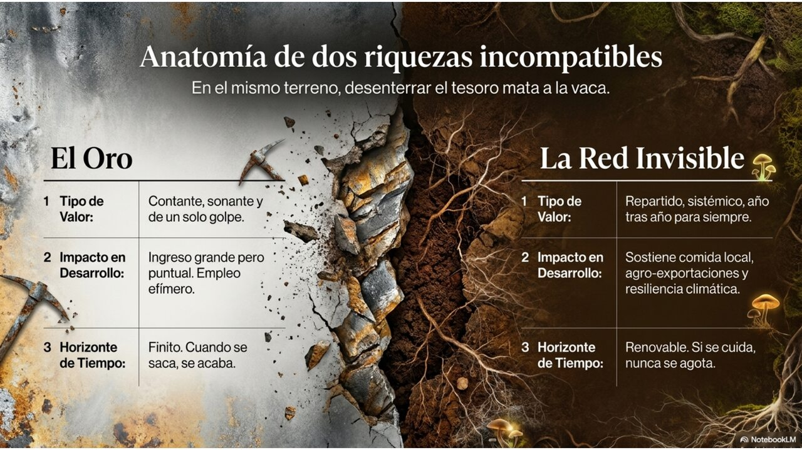
El oro de Crucitas es un stock: una cantidad finita que se extrae una vez y se agota; su valor se realiza de golpe y es irreversible. La red micorrízica es un fondo-flujo: rinde servicios de forma continua mientras se la mantenga, indefinidamente. En el mismo terreno físico, extraer el stock destruye el fondo. No es una metáfora: la minería a cielo abierto remueve los primeros metros de suelo —exactamente donde se concentra la red— y la contaminación por metales pesados que ese método arrastra es, además, uno de los estreses que las micorrizas ayudan a tolerar. Se elimina, así, justo el sistema que daría resiliencia.
| Eje | Red micorrízica (fondo-flujo) | Oro extractivo (stock) |
|---|---|---|
| Valor | Difuso, no transado, de bien público: fertilidad, agua, carbono, resiliencia. Bajo per cápita, enorme en agregado y en el tiempo. Difícil de precificar, fácil de subestimar a cero. | Concentrado, líquido, con precio de mercado y en máximos históricos. Fácil de contabilizar; tentador por su visibilidad inmediata. |
| Desarrollo | Sostiene la soberanía alimentaria (cultivos de consumo interno), la base productiva de exportación (café, cacao), la marca-país y el PSA. Desarrollo acumulativo y diversificado, dependiente de mantener el activo. | Ingreso fiscal potencial puntual; empleo local acotado y temporal. Riesgo de enclave y de «maldición de los recursos» si la renta se concentra. |
| Seguridad | Seguridad ecológica y humana: agua limpia, suelos, alimentos, salud. No resuelve por sí sola el problema criminal-territorial. | La formalización promete seguridad territorial (desplazar al crimen), pero es hipótesis [H]; añade riesgos de salud y ambientales de tipo [DC]. |
| Reversibilidad | Renovable si se la cuida; recuperable —parcialmente y con tiempo— mediante restauración. | Irreversible: el yacimiento extraído no vuelve; el suelo removido no se regenera en escalas humanas. |
De ese cuadro se desprende una conclusión analítica, no una recomendación: los dos valores no están en el mismo plano y, en el mismo terreno, no son acumulables. Quien decide no elige «más valor o menos valor», sino qué tipo de valor —y con qué horizonte temporal y qué reparto. El oro favorece a quien descuenta fuertemente el futuro y necesita liquidez hoy; la red favorece a quien valora la permanencia, la diversificación y la base biofísica del modelo de país.
Sobre «seguridad»: dos sentidos que conviene no confundir
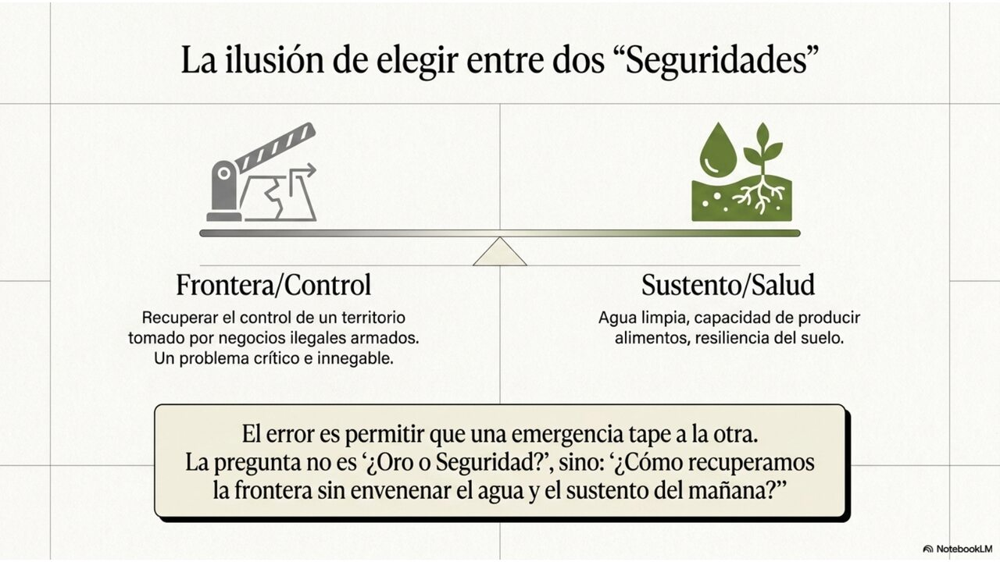
La narrativa oficial apela a la seguridad en sentido policial-territorial: recuperar el control de una frontera tomada por economías ilícitas. Es un problema real y legítimo. Pero la red micorrízica habla de seguridad en sentido ecológico-humano: agua, suelo, alimento, salud. Ambas son seguridad; no son la misma. Un error frecuente del debate es dejar que una desplace a la otra. La pregunta rigurosa no es «¿oro o seguridad?», sino «¿qué combinación de instrumentos atiende el problema criminal-territorial sin sacrificar la seguridad ecológica?» —y si la minería es realmente el instrumento más eficaz para lo primero, dado que su hipótesis de desplazamiento de la ilegalidad sigue sin demostrarse.
La red fúngica provee un valor mayoritariamente de bien público, continuo e inconmensurable con el oro: es la base biofísica del modelo de desarrollo costarricense y de su soberanía alimentaria. El oro provee un valor concentrado, líquido y único, atractivo por su precio récord, pero con captura de renta incierta, irreversibilidad y costos ecológicos confirmados —concentrados, además, en un terreno cuyo daño actual es inferior al 1 % del distrito. La elección, despojada de su envoltura técnica, es una decisión sobre identidad de Estado y horizonte temporal, y arrastra una dimensión de precedente: lo que se decide en Crucitas fija qué lógica —la monetario-inmediata o la sistémico-resiliente— gobernará las decisiones futuras. Cuantificar ayuda; pero pretender que una cifra zanje una elección entre tipos de valor distintos sería, justamente, el espejismo que esta sección busca evitar.
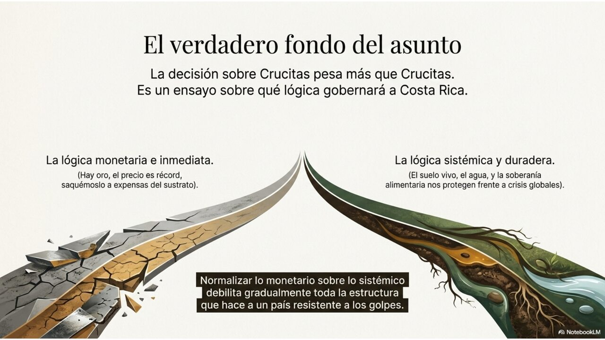
Cómo evitar que el hallazgo muera como dato sin consecuencia
La Nota 04 advertía un escenario llamado «dato sin política»: un hito científico que queda como curiosidad sin traducción regulatoria mientras la degradación continúa. Para conjurarlo no basta con celebrar el mapa; hace falta convertirlo en instrumentos. Lo que sigue es un menú de opciones —no una recomendación—, ordenado de lo más inmediato a lo más estructural. Cada una existe ya, en germen, en la institucionalidad costarricense.
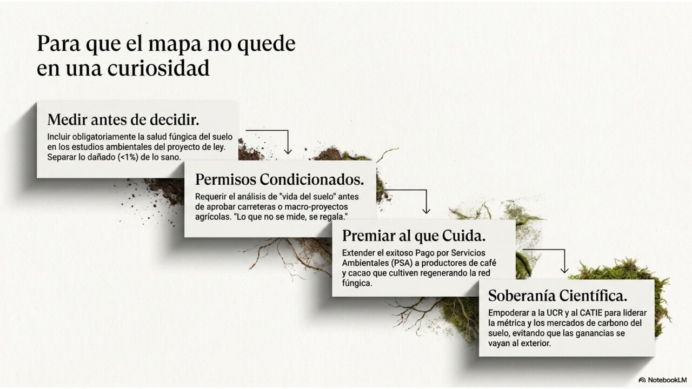
Salud biológica del suelo y zonificación en el diagnóstico que el propio proyecto ordena
El expediente 24.717 ya manda al MINAE elaborar un diagnóstico de degradación de suelos. Incorporar indicadores de redes micorrízicas y carbono del suelo, y zonificar el territorio en tres categorías —dañado (<1 %), recuperable y aún sano—, no requiere ley nueva: aprovecha un mandato existente para que la decisión sobre Crucitas se tome con el activo subterráneo a la vista y con criterio para proteger lo sano y restaurar lo recuperable, en vez de a ciegas.
Línea base micorrízica en la evaluación de impacto ambiental
Hacer de la biología del suelo un componente estándar de los estudios de impacto ambiental (SETENA) para proyectos extractivos, de infraestructura y agroindustriales. Lo que no se mide, no entra en la contabilidad del costo —y se da por gratis lo que no lo es.
Ampliar el PSA hacia los servicios del subsuelo
Costa Rica ya tiene el vehículo institucional (FONAFIFO, PSA). Extenderlo a prácticas que conservan la red —manejo agroecológico de café y cacao, restauración de pastizales, labranza mínima— convierte la conservación del subsuelo en una fuente de ingreso para el productor, no en un costo.
Carbono del suelo en mercados, evitando la captura desigual de renta
El carbono del suelo puede entrar en mercados de carbono, pero el diseño importa: si los instrumentos se redactan en el núcleo, la periferia biodiversa aporta el sustrato y capta poca renta. Diseñar reglas que retengan valor localmente es la diferencia entre oportunidad y nueva dependencia.
Capacidad científica nacional sobre suelos vivos
Apoyar a UCR, CATIE y centros nacionales para producir datos propios —no depender de modelos globales que dejan a los trópicos como vacío de muestreo— y formar el capital cultural científico que permita al país ser actor, y no receptor, de esta frontera.
Incertidumbres abiertas
- ¿Desplazaría realmente la minería legal a la ilegal en Crucitas, o coexistirían? La hipótesis central del proyecto sigue sin evidencia concluyente.
- Si se aprueba la excepción «solo para Crucitas», ¿permanecerá acotada, o operará como precedente que habilite reclamos análogos en Corcovado, Miramar o Abangares?
- ¿Cuánto del territorio dañado es efectivamente recuperable por regeneración o restauración, y en qué plazos? La sucesión secundaria tropical es lenta y variable.
- ¿Cuánto carbono del suelo es permanente y manejable, y cuánto se reemite? De ello depende su valor real en mercados y modelos climáticos.
- ¿Existe la voluntad y la capacidad institucional para incorporar indicadores de suelo vivo —y soberanía alimentaria— al diagnóstico del MINAE y a la EIA?
- ¿Puede Costa Rica diseñar instrumentos de carbono de suelo que retengan renta localmente, o reproducirá la captura desigual del núcleo?
- ¿Cómo separar la legítima necesidad de seguridad territorial fronteriza de la decisión sobre el modelo de desarrollo, sin que una secuestre a la otra?
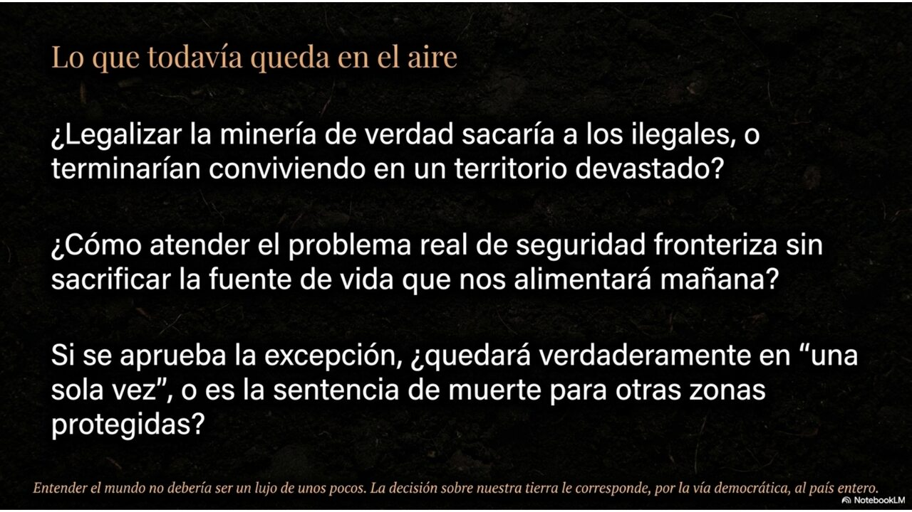
Fuentes · APA 7
- Stewart, J. D., Bisot, C., Cargill, R. I. M., Van Nuland, M. E., Kiers, E. T., et al. (2026, 11 de junio). Global density and biomass of arbuscular mycorrhizal fungal networks. Science, 392(6803), 1171. https://doi.org/10.1126/science.adu4373
- University of Sheffield. (2026, 11 de junio). First global map reveals underground fungi networks long enough to reach the sun a billion times. https://www.sheffield.ac.uk/news/
- NPR. (2026, 16 de junio). How to map quadrillions of miles of underground fungi. https://www.npr.org/
- Journal of the Saudi Society of Agricultural Sciences. (2025). Arbuscular mycorrhizal fungi (AMF): a pathway to sustainable soil health, carbon sequestration, and greenhouse gas mitigation. https://doi.org/10.1007/s44447-025-00023-w
- Aguilar-Paredes, A., et al. (2019). Agroecological coffee management increases arbuscular mycorrhizal fungi diversity. PMC6324804. https://www.ncbi.nlm.nih.gov/pmc/articles/PMC6324804/
- CRHoy. (2026, 20 de mayo). Gobierno impulsa reactivación minera en Crucitas: estas son las propuestas. https://crhoy.com/
- Observatorio de Bienes Comunes, UCR. (2025). Expediente legislativo 24.717 — Crucitas entre el oro y la naturaleza: ¿qué camino elegirá Costa Rica? https://bienescomunes.fcs.ucr.ac.cr/
- Universidad de Costa Rica / Kioscos Socioambientales. (2026, 17 de febrero). UCR rechaza propuesta del Gobierno que permitiría minería de oro a cielo abierto en Crucitas: el área afectada representa menos del 1 % del distrito frente a 849 km² propuestos. Delfino.cr. https://delfino.cr/
- Observatorio de Bienes Comunes, UCR. (2026, 18 de febrero). Minería ilegal: el nuevo pretexto del viejo extractivismo. https://bienescomunes.fcs.ucr.ac.cr/
- Semanario Universidad. (2026, 27 de febrero). Legalizar la minería en Cutris, un retroceso ambiental y legal. https://semanariouniversidad.com/
- Serendero Hülssner, J. (2026, 20 de abril). Crucitas, la oportunidad de Costa Rica para convertir el oro en naturaleza… y la naturaleza en riqueza. Delfino.cr. https://delfino.cr/
- Revista E&N / EFE. (2026, 19 de junio). Evacuan a la presidenta de Costa Rica de una gira de campo tras escucharse una explosión en Crucitas. https://www.revistaeyn.com/
- Acento. (2026, 19 de junio). Explosión sacude gira de la presidenta de Costa Rica y reaviva debate sobre Crucitas. https://acento.com.do/
- Fortune. (2026, 18 de junio). Current price of gold. https://fortune.com/
- Trading Economics. (2026, 19 de junio). Gold — Price. https://tradingeconomics.com/commodity/gold
Nota metodológica. Este anexo integra tres registros analíticos distintos y no colapsables: la evaluación epistémica explicacionista (MEEE-G, inspirada en Goldman), el análisis dinámico antropológico (ADD, según Montero Fonseca) y la capa de sistemas-mundo (Wallerstein/Arrighi). Los códigos —[DC] dato confirmado, [IP] inferencia plausible, [H] hipótesis, [Int] interpretación, [C] conjetura— caracterizan el estatus justificatorio de cada afirmación, no la convicción del analista. Las declaraciones de analogía (literal / fuerte / débil) y de parámetro de control siguen el criterio de rigor de la ADD frente al uso metafórico de los conceptos de complejidad. Las narrativas en disputa se presentan en su versión más fuerte sin que el documento adopte ninguna como propia. El análisis combina evaluación epistémica explicacionista y análisis dinámico antropológico; no constituye predicción determinista ni recomendación política. El menú de instrumentos de la Sección VI describe opciones existentes en la institucionalidad costarricense, no prescripciones; la decisión corresponde a los órganos democráticos competentes.